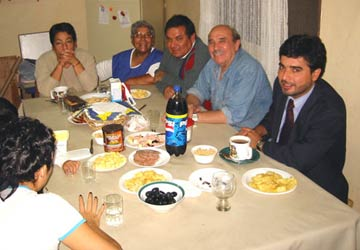
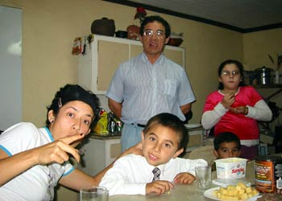
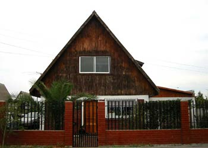
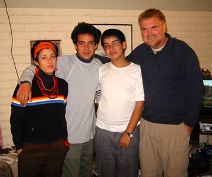
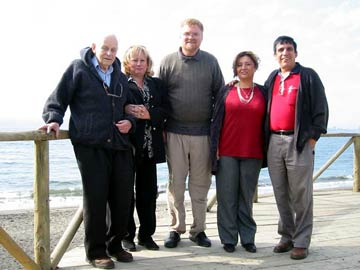
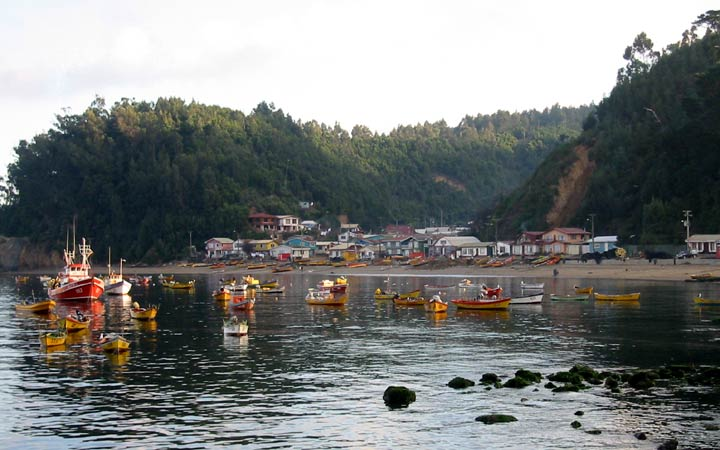
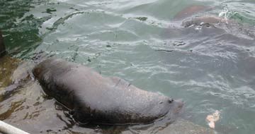
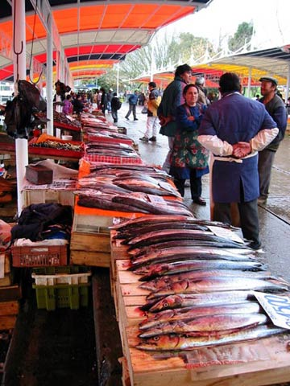

===============================
Subject: Vina del Mar and Valparaiso
Date: Sun, 31 Mar 2002 17:02:22
From: Bill Sundstrom
To: Betty Cassady
Cc: Dain Sundstrom
Attachment: Img_0408.jpg
Saturday, March 30th:
In the morning I noted that there was an airport near Viña del Mar in Quintero. I really wanted to see Viña so I laid a plan to fly there. When I got to the airport I discovered that the airport in Quintero was military only and that the airport in Viña was both civilian and military. So I flew to the Viña del Mar airport. No phones, no taxis and no buses at the airport, just a few soldiers. I hike to the road, and waited for a bus to pick me up. Some time later, one finally stopped. I found a great place to stay for $9 a night on the 'Nicollet Mall, of Viña, only the mall is full of people - especially on a Saturday. I spent the rest of the day looking around here. Viña is a stunning little city in a string of beach side cities that stretch from south of Valparaiso to Quintero and more. Chile is a lot like Europe in temperament, in its buildings, in its apparent wealth - and yet it is still South America where food and housing is at least reasonable. I had heard that for an ordinary condo here, one might pay between $35000 and $125000 - not bad for spectacular views and a safe, pleasant environment. By the cars, I would say the place is down right wealthy, yet the typical restaurant plate is $5 to $10. Not as cheap as Lima but still darn good. I really like Chile, and Viña is great. I walked down to the beach, found a bar over the water with a fantastic view, and had a local brew for $1.50. Later I headed back as the sun was setting over the South Pacific. I stopped to listen to some great music in Peruvian flutes, whistles, and recorders. It was totally unlike the Peruvian music that I had been hearing the past month and it was beautiful. As I ate supper from a balcony above the street - a parade of bands and Chilean dancers filled the street with color, movement, and marching bands doing Latin rhythms.
Easter Sunday:
Today I went to Valparaiso. It does seem as beautiful as Viña, but it seems to have a lot more character. I took the twenty-minute train ride to the port. Where I took a half-an-hour boat tour of the harbor. Again I was so impressed by the views. As I looked over the hills that back the city I could see the snow-capped Andes. I did a walk through the city. At one point I stopped for a lovely bowl of fish soup and a very nice restaurant. Before I left, I got someone to take a picture of me with the restaurants view in the background. Look and you will see one of those mountains over to the left of my head and you can see the harbor below. Way to the left there is a little piece of Viña. After seeing a lot of the city, I took the train back to Viña. I went to a really great park near the station called Quinta Vergara. I read, and soaked up the atmosphere.
Tomorrow, I may go to Santiago, if not tomorrow then Tuesday. I will let you know in a few days.
Love,
Bill
===============================
Miranda Birthday Party


Subject: Talagante and Santiago
Date: Thu, 04 Apr 2002 16:42:51
From: Bill Sundstrom
To: Betty Cassady
Cc: Dain Sundstrom
Monday, April 1st:
I left Vina del Mar and found my way to a little airport about 60 kms. Southwest of Santiago. I choose this airport because it was small and close to Talagante. After landing and finding no one at the airport I tried to fly to the nearest large airport, Los Cerrillos. But alas that was not to be. There was a big military air show taking place there, so I had to return to Melipilla. After tying down, I headed for the Miranda household in Talagante at the invitation of the oldest daughter, Carolina (23). I had met Carolina in Monterrey some three months ago. I came to Talagante by bus and taxi. Add the Metro in Santiago, and those have been my ways of getting around here. The public transportation system is good, but a bit chaotic here.
The Miranda's are a great family to visit! There is David Sr., Julia, David Jr. (21) and Matias (14). Talagante is far out suburb of Santiago. After a warm welcome, Carolina and I headed into the city where I tried to get orientated I saw the main street Alemeda and got use to the metro and busses.
The family tends to stay up late because Matias goes to the second shift of school in Santiago and does not return home until 8:30 in the evening. In fact, they all seem to be out quite late at work, play and study.
Tuesday:
I slept late. Then in the afternoon David Sr., Carolina and I went to a local winery. The Undurraga winery is old and produces some good Chilean wines. The tour was excellent, except for the light tasting section at the end. I got a bottle of white and red. Wine is very good and very inexpensive here. Most bottles cost less than $5. Later in the day I got a good chance to talk to the two Davids. Dad had some interesting stories to tell about the year right after the coop and his refugee status in Sweden. David jr. is an environmental engineering student at the University of Santiago. Having studied many of the same subjects and having many similar interests to both the Davids, I have found both of them very interesting. David sr. works for Erikson (think phones) and Julia is a supervising midwife at a public health clinic. By the way they lived in Sweden for 18 years before returning here in the late 90's.
Wednesday:
I got to see a lot more of Santiago yesterday. There is a haze here in Talagante and it is worse in Santiago. This must be due to all the pollution that gets trapped there because the city is like a big bowl. Places that I visited were the main plaza where I saw a beautiful old post office. Not far away, I went to another pre-Columbian museum. We saw a fish market, the main pedestrian avenue, an ancient bar that serves new-wine drinks. Along the way, I got a chance to better know Carolina. Like the rest of the family she is fluent in Swedish. Both her and the two David's are fluent in English too. She has finished her course work for a bachelor's degree and is doing her final paper now. She has been dropping resumes all over Santiago looking for work as a translator. Last night was very special; it was David sr.'s birthday. His name is Oscar and he makes shoes. I brought him a bottle of good wine. He says the wine is why he is still so healthy today. There were a large number of his children there and some grandchildren and even a great-grand child. Oscar came from a big family with 15 brothers and sisters. His oldest brother had 20 children. Oscar has 11 children. The total count of children, grandchildren and great-grandchildren is 54. If all the progeny of he and his brothers and sisters were to get together there would likely be a 1000 people there. The food and the good feeling were great.
Thursday:
Today I only went down the little airport to check on my little airplane. Everything seemed OK. I will take the children here flying this weekend.
I finished reading Carl Hiaasen book: Double Whammy. I started listening to the Grisham book you brought to Lima.
Take care,
I love and miss you,
Bill
===============================
Subject: Past week in Santiago
Date: Wed, 10 Apr 2002 13:28:00
From: Bill Sundstrom
To: Betty Cassady
Cc: Dain Sundstrom
April 5th, Friday:
I went into Santiago and wondered around. I visited a nineteenth century home that was very reminiscent of Versais but much smaller. I wandered through a very old part of the city, then down several of the pedestrian streets. I bought a NY Times, my first paper in three months, and read it in the Plaza de Armes. Later I got some socks and then some flowers for the house.
Saturday:
We had lunch at David's father's house. More friends and relatives were over to celebrate his birthday. While I was there, I ordered a pair of shoes. Unfortunately, they could not get soles big enough for my feet so I won't be getting my first pair of handcrafted shoes. Later that night, we went to a house warming of one of David's coworkers. It was a brand new home. Construction was simple but good. It cost about $40,000 and was between 1000 and 1100 sq. feet on two floors and no basement. The outside was painted brick and the roof was tile of sheet fiberglass. Like 90% or more of the Chilean homes, the lot was incredibly small, extending no more than 10 feet beyond the perimeter of the house. Some other notes on houses I have seen here follow: Most construction ranges from poor to adequate. Masonry superstructures are common bus so is wood-frame construction. They use a lot of wood here. This is really the only country so far that I have been in that uses wood like we do in the states. Roofs are usually metal or fiberglass panels. I continue to be amazed by the public transportation system both for its low cost and its ease of use. Because of it the number of cars is not all that large for the general wealth and population of Chile. Sunday: I took the Miranda children flying. First, we got gas a nearby airport. Then, we flew to the coast. We flew north a bit over San Antonio and then over their new beach house. We turn south and backtracked then flew onto Pichilemu for a pit stop. There I discovered that the local GA airport was Tabalaba (SCTB). The pilot that gave me the info also provided me with the published VFR approaches to the airport. We returned hungry and tired about 6:00 that night. Monday: Carolina and I left mid-afternoon to go to Quilpue near Viña del Mar. We visited her aunt, Arcilia - the twin of her mom. I also met her children: lovely Pamela, Alfredo, and the youngest Antonela. All are about the same age as the Miranda kids. Arcilia's husband died less than a year ago from a heart attach at the age of 46. We left about 8:30 but did get back to Talagante until 1:00 AM.
Yesterday - Tuesday,
I flew to Tabalaba to get fuel and change my oil. The cost of the oil was insanely high, but I paid the price. I would always rather be safe than sorry. The cost was nearly $90 for a case or about $7.50 a liter. Compare that with the $4.25 that I usually pay for Shell 15w50.
Today:
This is a day to do the small things. I washed my clothes this morning. I am writing to you. Soon I will get a hair cut. I am also doing some planning for the next two weeks.
My plan:
Friday I will leave for Concepcion. Monday or Tuesday I will go to Valdavia. After that I will go to Puerto Montt and Chiloe.
I will write you from Concepcion.
Love,
Bill
===============================
The Miranda Home

The Miranda Children and Me

Subject: Not much
Date: Fri, 12 Apr 2002 08:05:11
From: Bill Sundstrom
To: Betty Cassady
Cc: Dain Sundstrom
Attachments: Img_0435.jpg, Img_0436.jpg
I just thought you might like to see a couple of photos:
Image 435 is the Miranda home. It looks like many of the homes I have seen in Chile.
Image 436 is a photo of me with the Miranda children.
I really have not done much the last couple of days.
I plan to go to Concepcion today.
Love,
Bill
===============================
===============================
Klaus, Mary, Me, Ida, and Francisco

Subject: Concepcion
Date: Sun, 14 Apr 2002 21:13:33
From: Bill Sundstrom
To: Betty Cassady
Cc: Dain Sundstrom
Attachments: Img_0448.jpg, Img_0454.jpg
Friday:
I finished packing and said my 'good-byes' to the Miranda children. I will miss them and I hope some day that they might visit us. I rode in a collectivo taxi to Melipilla and set out for Concepcion. Francisco Zúñiga and his son Alvaro came to pick me up at the airport. You met them on your Trek to Machupicchu. When we got to their condominium, I met Francisco's lovely wife, Ida. She was kind enough to let me stay with them until I leave tomorrow. I have been sleeping in their daughter's room. Karla is in Ottawa working on a PhD. In the late afternoon after a great lunch, Alvaro, Francisco and I hiked about the University of Concepcion, the cultural center of the city. From there we hiked to the center of the city to look around. When we got back we had another of Ida's great meals.
Saturday:
We explored one of the city's suburbs, San Pedro. We saw some great view, beautiful homes, and his sports club. At mid-day we visit a very quaint museum just a block from his home. Then we went downtown for coffee and to hear some street musician. In the late afternoon, we went out to a blue-collar community to the east. Along the way we saw many horse carts taking product into the nearby towns to sell. In my trip through the Americas, I have seen such carts here and there, but in Chile there seems to be a very large number of them. What really startle and tickled me was the sight of an ox cart and then another. Never have I seen the large oxen being used to move freight, in this case lumber and then logs. The oxen are about five feet high, have horns, big legs and hooves - but are colored like ordinary cows. In the evening we went to visit Aida, Fancisco's mother (81). Two of her friends, Klaus and Mary, also came over. Klaus also is 80. He was fascinating. Like me he loves to travel, and unlike me he has seen most of the world.
Today, Sunday the 14th:
Francisco, Ida, Klaus, Mary and I visited two delightful fishing villages, one active the other not. The first one was Caleta Lenga. Here we ate empanadas and seafood. Most of the food was great. They have a huge variety of mollusks here and ate several. From here we made a fairly long journey to the Caleta Tombes. This is a beautiful and active fishing village. I saw much of the seafood I had just eaten for sale from fishermen and their families. On the way back we stopped at naval base to view a war ship that had been built in the 1860's and sold to Peru - only to be capture in a war by Chile in the late 1870's.
It was a great day and lots of fun.
Just a note on the where I am: The weather is turning cold. This is the equivalent of mid October and fall is really setting in. The leaves are starting to turn color and on some trees the leaves are gone. I will need to get warmer clothes soon. I will try to hold out until Argentina where everything is suppose to be very cheap.
I really like this place. Concepcion feels like a great place to live. It seems with every mile I travel south I like it here more and more. Chile is like no other country I have been in. It really feels more like the US and Europe than any place I have been. Yet living here is very inexpensive: housing, food, transportation, and its is all a real bargain! I have heard that Argentina is much the same only cheaper.
I am attaching two photos:
Image 448: Klaus, Mary, me, Ida, and Francisco.
Image 454: A section of Caleta Tombes.
A final note: I have heard from Jimena Meschiati and sends her reguards.
I have been trying to call today but have not been getting through.
I will write in a few days.
Love,
Bill
A section of Caleta Tombes

===============================
Harbor Seals

The Fish Market

Subject: Valdivia
Date: Tue, 16 Apr 2002 19:07:44
From: Bill Sundstrom
To: Betty Cassady
Cc: Dain Sundstrom
Monday the 15th of April:
With the skies overcast in the morning, I waited until the afternoon to leave Concepcion. I filed IFR because I expected to fly through the clouds, but surprisingly it was pretty much clear skies all the way. I landed at the bigger of her two airports, but after a slight discussion with the flight operations I decided to fly to the smaller airport. It's a real neat little airport; it even had AV gas. I filled it up for the second time that day and took a taxi into town. Valdivia has about 130,000 souls living in the area. A beautiful little river wraps around the town. Though founded 450 years ago by the classiards, there is a heavy German influence here - and actually throughout the south of Chile. The sun was shining brightly and it was warm. I checked into a little hostel that seems to have a number of young women in residence. I walked down to the information booth at the riverfront. Then I sat in the main plaza enjoying the sun, the people and a good book (Penance by Housewright) that I just finished this morning. I had a great dinner in a fairly fancy restaurant. Then back to my rooms. I actually have a decent cable hookup here, so I saw the Jim Lehrer Report.
Today, Tuesday:
It was very overcast this morning. I headed out to explore the city. I walked around for a couple of hours then went to a little museum on the other side of the river. . In any case, when I left the museum, I walked over the river and looked down on the fish market along side the river. I could not believe my eye. There was a pack of seals in the water playing and eating and coming up on the lower part of the boat landing. I hustled over to take some pictures. Then I walked across the street to have salmon for lunch. Food in the markets and in the restaurants is very cheap here. Lunch with beer and coffee was $3.60; I saw raw salmon for $2.2 per kilo; and apples in the market for 30 cents a kilo. With the rain, I was going to stop and do some shopping, but everything except restaurants closes in the midday.
The weather today sucks. That is why I have spent most of the afternoon just hangout in the hostel. Within minutes of leaving this morning it began to mist and with each passing hour the rain came a little harder. By mid afternoon it was raining and there was a cold wind blowing. I am cold even in my room. I hope I can hold out to Argentina to get some warmer clothes, but if not so be it.
I will head over to an internet place shortly.
I will try a local pub tonight.
If it clears up tonight, may head further south tomorrow, someplace near Peurto Montt, If not tomorrow, then surely on Thursday.
The photois of a seal. I will send Gitta the one of the fish market.
Take care and love,
Bill
===============================
Subject: Peurto Varas
Date: Fri, 19 Apr 2002 19:46:46
From: Bill Sundstrom
To: Betty Cassady
Cc: Dain Sundstrom
Attachments: Cueca.jpg, Image_church.jpg
Wednesday the 17th:
I left in the late morning from Valdivia. It was a fairly good day to fly.
I flew over the forts near Valdivia in Niebla and Corral. The I headed east and then south flying over four beautiful lakes. I put down in Peurto Varas on Lake Llanquihue. The German influence is even greater in this area. The influence is very strong in the architecture. There are two photos attached that will give you a sense of it. The rain and cold weather were generally dampening my experience here. The great dancing that I saw that night helped quite a bit. About 8 or 8:30, I walked to the center where a stage had been set up in the street. There was a dance contest taking place. They were dancing the cueca to real Chilean music. It took me by surprise.
For a moment I saw passion in Chile. The men in their boots with ornate spurs, flat brimmed hats and ponchos seemed to be on fire as they danced with women festooned in early twentieth-century garb. It is true that Chileans seem more to have the temperaments of the Germans or Swiss than their Latin neighbors. At a pub I met an aqua-engineer, Carlos Breton. His family is involved with one of the many fish farms that I have seen in the fjords and lakes of Chile. Chile rivals Norway for production of salmon, and it produces large quantities of shellfish like abalone and clams. Breton's farm produces it all. I hope to visit it before I leave the area.
Thursday:
I did not do a whole lot. I decided to rent a car for two days. It would help me to see a lot and stay dry and warm. I visited a fjord to the south of Volcano Osorno. I saw a large number of fish farms on the fjord.
Today - Friday the 19th:
I drove around the lake on a four-lane toll-road, many two-lane paved roads, and many miles of gravel roads. It rain on and off but mostly just in the morning. This was a beautiful journey. The west and north side of the lake are extremely pastoral, green with thick, 8 inch high grass, loaded with cows and German farms. The east side near the volcanoes is very rugged. I drove through an old lava floe. The sand on this end of the lake is only pitch black. I also drove around half the base of Volcano Osorno to a waterfalls ant then on to another mountain lake that is on the border with Argentina. The natural beauty is stunning here. When I got back to my hostel, I was hungry and tired. I am writing and resting for soon I will head for the internet storefront, then a restaurant, and finally a pub.
I will leave late tomorrow, or more likely on Sunday for Chiloe. And I will write again soon.
Love,
Bill
===============================
Subject: Chiloi
Date: Tue, 23 Apr 2002 19:30:58
From: Bill Sundstrom
To: Betty Cassady
Cc: Dain Sundstrom
Attachments: Quellon_harbor_m.jpg, Castro.jpg
I was looking at the maps and thinking about going further south. I am really temped. It is only 600 miles to Punta Arenas, which is on the Straights of Magellan. But given that winter is really there with snow and all, I think not. This is as far south as I will probably fly. To give you a sense about how far south this is - if you were to be in the same place in the northern hemisphere it would me the end of October in the Albany area of New York and Punta Arenas would be some were in the north of Quebec.
Saturday the 20th:
I packed and loaded the bags in my rental car. I drove in to Puerto Montt. It is the largest city in the area. It is a very nice port city. I just had a small look around and decided that if Chiloé went faster than planned I would come back to Puerto Montt. In any case, I have to leave from there for Argentina.
I dropped the car back a Puerto Varas and took a taxi to the local airport. An hour later I arrived in Castro, which is located near the center of the Isle de Chiloé. One of this tiny airport's workers (hard to believe anyone works there) was especially kind showing me a bit of the city, bringing me to a promontory outlook, and helping me get to a hospedaje. I went out to a good restaurant and had a local specialty call cancato. Cancato is salmon stuffed with cheese and sausage. It was very good. I also had a typical Chilean salad of tomato, onion, cilantro and some pickled banana peppers.
The amazing thing about the salad is that the onion does not seem to be hot at all. I asked about it and they use salt that must remove the typical onion heat. I cannot tell you how good it is - someday you will have to try it yourself. I walked around the town and bought a pair shoes. The town is quite small with about 20,000 people. I saw the movie "The Gift." And later I went to a pub for a couple of hours. It was much less fun than the pub I visited in Puerto Varas on Friday night - so I head out before midnight.
Sunday:
What a way to start the day: Cold, cold, cold, and windy, windy, windy. It has rained most of the time since I got here. It clears up occasionally. Even as I write, it is pouring down and it seems so loud in my room just under the roof.
I spent the whole day reading. I tried to call home but evidently AT&T doesn't have a relationship of with the telephone company in the south of Chile.
Yesterday, Monday:
I tried to rent a car at one of the two places in town that rent cars. Hay no autos. So I decided to bus it. I went to small fishing village, Quellón (k-yon) at the far south of the island. Along the way I saw the typical flora of the isle: pines, poplar, blackberries (also called more) a few fungus covered apple trees, and grass and more grass. There was nothing special in the village, except it is pretty much the end of populated part of Chile. Yes, there are some settlements on the mainland, but they are more and more sparse as you head south. I am beginning to think that Castro is a very nice little city. After all where could you find a place where nearly every third house invites you to live there? At least that is how often I feel that I am spotting a hospedaje. I got back about dark and chilled out the rest of the evening.
Today, Tuesday the 23rd of April:
At first I planned to go to the national park, but alas no excursions were available due to rain. So, again I grabbed buses to go to the Isle de Quinchao and the village of Achao. Along the way I also stopped in the village of Dalcahue. About all that I claim that I saw of significance in Achao was a church that was first built in 1730. I was back in Castro by mid-afternoon. I suspect that in the summer (December to February) this is an idyllic place to visit, but it is really hard to enjoy this time of the year - despite the beauty.
I have decided to head back to Peurto Montt and prepare to go to Argentina the next clear day. That could be tomorrow, but the weather report doesn't look all that great. As long as I get to San Carlos De Bariloche by Friday, I will be happy. Since it is a ski area, maybe I can try skiing in the Andes. My only concern with going there is all the water in clouds - icing could be a problem.
I listened to School for the Blind. It was not worth listen to. I finished reading Final Victim by Stephen Cannell. It was pretty darn good. I like the hi-tec stuff in the sluthing - but as usual I hate the gory details.
Thank god, this didn't have many.
Enjoy the photos. And that's it for now.
Love,
Bill